Field manual · v1.1
Plan mapping flights offline, fly them in DJI Fly.
Lite Flight lets you draw aerial-imaging waypoint missions on saved satellite imagery and drop them straight into DJI Fly's waypoint list. It works even off-grid.
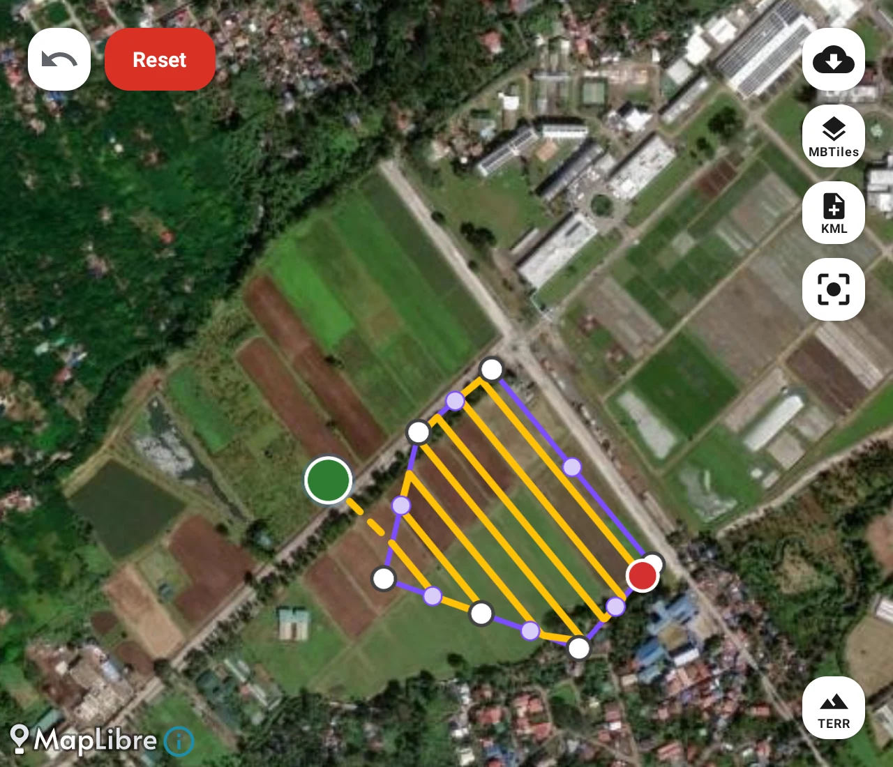
01 · Overview
How it works
Every mission goes through the same five steps. Do the first one at home while you still have internet; the rest work anywhere.
- Save the mapDownload satellite imagery and elevation for your site while online.
- Draw the areaTap corners on the map, trace a line, or drag a quick box.
- Check settingsPick your drone; set altitude, overlap and speed.
- Send to DJI FlyPick a DJI Fly waypoint slot. Lite Flight swaps your mission in.
- Fly itOpen the mission in DJI Fly, start Timed Shot, press GO.
The mission flies the lines; the camera shots come from DJI Fly's Timed Shot photo mode. Under Drone speed Lite Flight tells you the longest interval that still gives your front overlap. Usually that's 2 s, the shortest interval DJI cameras allow. Set that in DJI Fly before you start.
02 · Vocabulary
Words you'll see
New to mapping? These nine terms cover nearly every setting in the app.
- Waypoint mission KMZ
- A list of points the drone flies through on its own. DJI stores each one as a
.kmzfile. - GSD cm/px
- Ground sample distance: how much ground one photo pixel covers. Lower is sharper. It's set by altitude: fly higher and the GSD grows.
- Front overlap %
- How much each photo shares with the next one along a flight line. 80 % is the usual mapping value.
- Side overlap %
- How much neighbouring flight lines share. Higher overlap means more lines and a longer flight.
- Altitude above take-off m
- Height measured from where the drone took off. Simple, but over hills the real height above the ground changes.
- Terrain follow m AGL
- Height kept above the ground under the drone, using downloaded elevation data. Use it on slopes so the GSD stays even.
- DJI Fly slot No. N
- A waypoint mission already saved in DJI Fly. Lite Flight replaces its contents with your mission, because DJI Fly has no import button on the RC.
- Shizuku helper app
- A free app that gives Lite Flight extra system access, so it can refresh DJI Fly after a send. Started over Wi-Fi with wireless debugging.
- DJI Fly Refresher companion app
- A small app for DJI RCs that does the same refresh without Shizuku or Wi-Fi. It taps through DJI Fly's App info for you.
03 · At home, with internet
Before you go to the field
Before going out into the field, check the following while you still have an internet connection.
License & trial
A new install runs as a 14-day trial with every feature on. From day 8 a reminder asks for a license each time you open the app; after day 14 the app locks until you activate. To get a license, open this screen from the red Trial line under the app name.
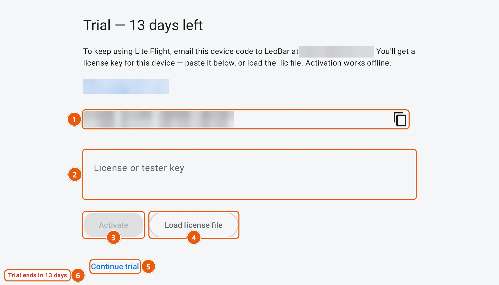
- Device code. Tap the copy icon and email it to LeoBar at the address shown on this screen. Each license only works on the device it was made for.
- License or tester key. Paste the key you get back.
- Activate. Works offline.
- Load license file. Use this instead if you received a
.licfile. - Continue trial returns to the app.
- Days left shows in the corner of every screen during the trial.
Download imagery for offline use
Out in the field the RC usually has no internet, so the satellite map must already be on the device. Tap the cloud button ⤓ at the top right of the map to open Imagery Download.
- Pan and zoom until your site fills the view. Bigger views take longer and use more storage; the limit is 50 km².
- Tap Download this area.
- Name it, keep Include elevation data ticked, and tap Download.
- The area appears under Downloaded areas once it's done. A small field takes a few seconds.
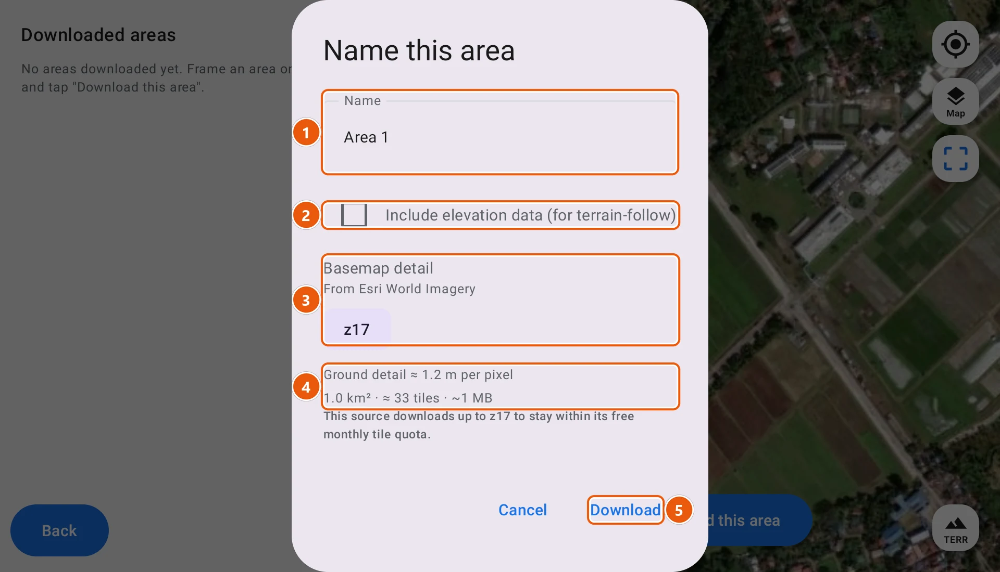
- Name of the saved area, so you can find it later.
- Include elevation data. Needed for terrain follow. Leave it on.
- Basemap detail. The zoom level to save. The built-in Esri source stops at z17 (about 1.2 m per pixel).
- Size estimate in km², tiles and MB.
- Download starts it. You can leave the screen while it runs.
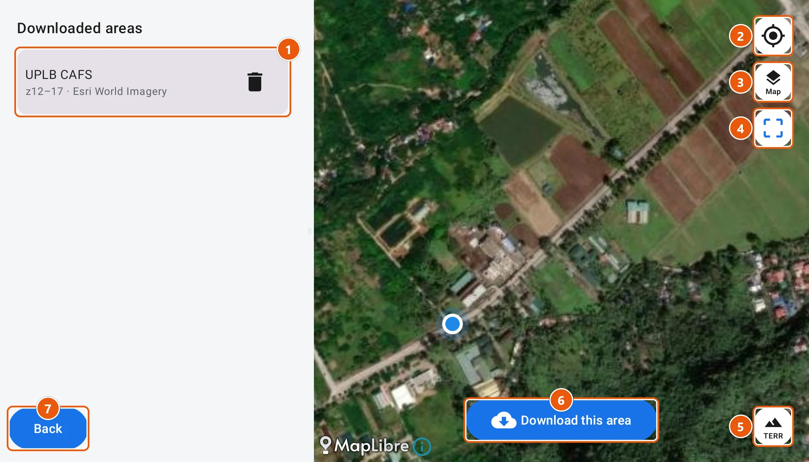
- Downloaded areas. Tap one to switch to the map source it was saved from; the bin icon deletes it.
- My location.
- Map source. Switch basemaps or add your own tile address. Saved areas only show while the source they came from is selected.
- Size guide. Shows the 50 km² frame.
- TERR shades the elevation data you've saved.
- Download this area downloads the imagery inside the current map view.
- Back to the map.
Use another imagery source. Lite Flight comes with Esri World Imagery, but you can add any provider that offers XYZ tiles. Tap Map, then Add custom, and paste the tile URL, for example https://…/{z}/{x}/{y}.png. Addresses copied from QGIS's QuickMapServices work too. Only use sources whose terms allow offline download.
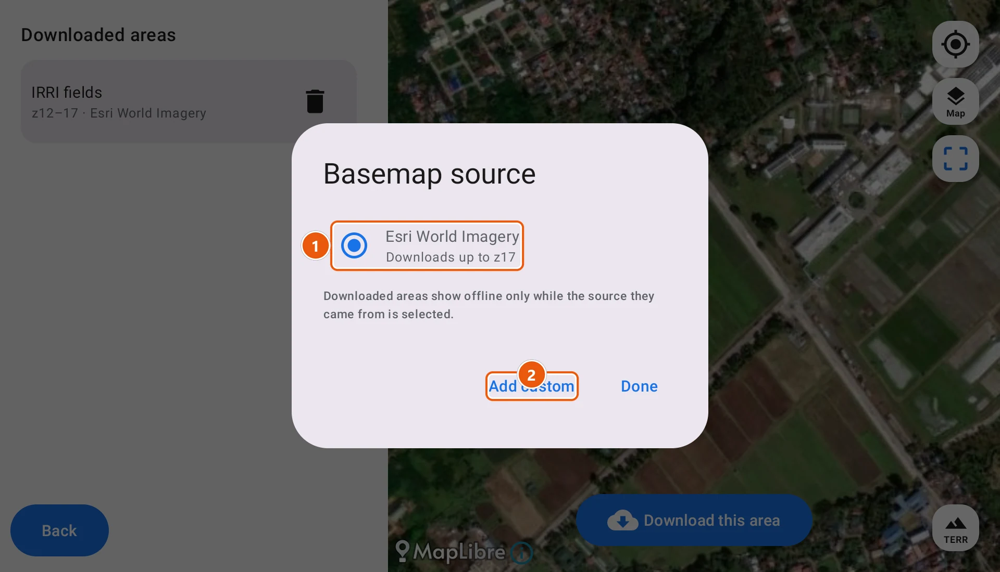
- Selected source. Custom sources you add appear in this list too.
- Add custom asks for a name, the tile URL and an optional attribution.
Prepare DJI Fly slots
DJI Fly on the RC can't import mission files, so Lite Flight writes into missions DJI Fly already has. Make a few throwaway missions first. Each one becomes a slot you can fill later.
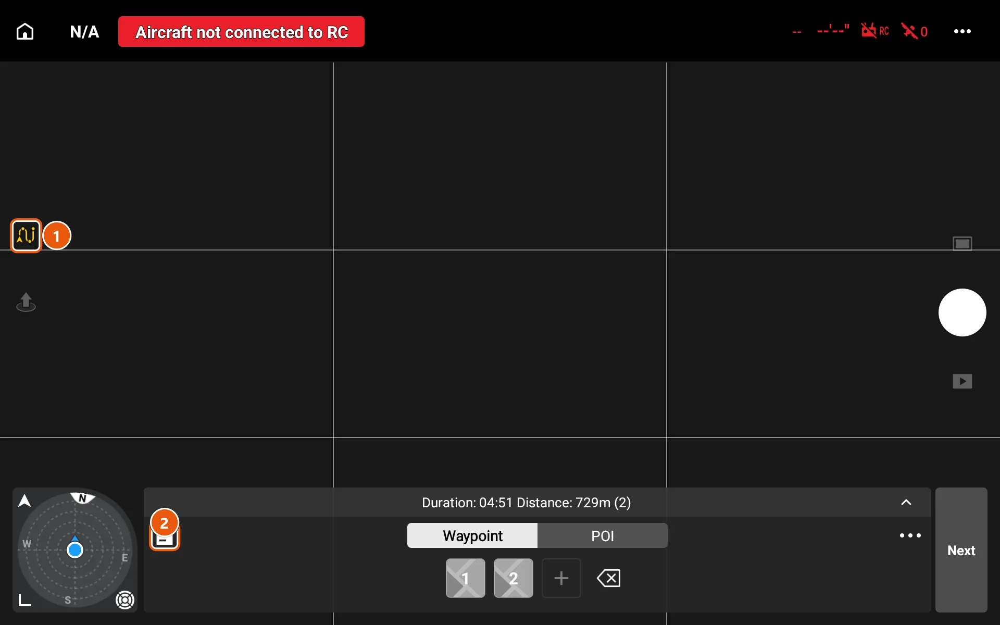
- In DJI Fly, open the camera view and tap the waypoint icon ① on the left. No aircraft needs to be connected.
- Add two waypoints anywhere ② and save the mission. It doesn't matter where they are.
- Repeat until you have one per mission you'll fly that day. Five or six is plenty.
- The list icon ③ opens DJI Fly's waypoint list, where every saved mission shows up.
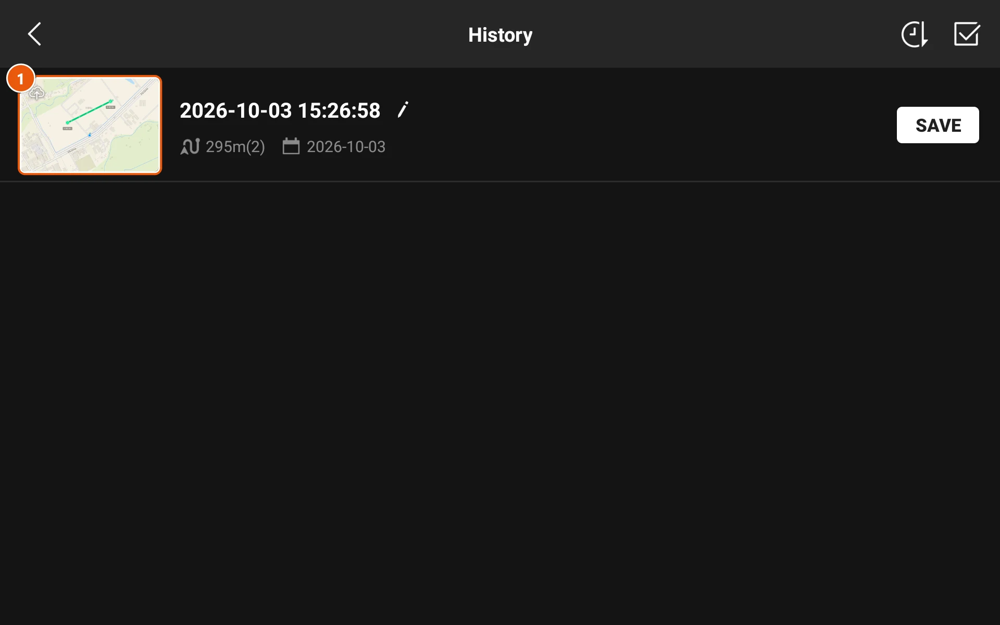
- A throwaway mission in DJI Fly's list. Each one is a slot: Lite Flight lists it as DJI Waypoint Mission No. N and can fill it with your real mission.
Once Lite Flight has filled a slot it's labelled Swap: Mission. You can overwrite it with the next mission; the app asks first. Deleting the mission inside DJI Fly removes the slot.
04 · One-time setup
Shizuku or DJI Fly Refresher
Putting a mission into a DJI Fly slot is one job; getting DJI Fly to show it under its new name is another. DJI's controllers are lenient about the first, Android phones are strict. Find your device below.
| Device | Put the mission into a slot | Refresh DJI Fly (new name and thumbnail) | Install |
|---|---|---|---|
| DJI RC Pro 2, original DJI RC Pro | Folder access, a one-time grant. No helper needed. | DJI Fly Refresher (no Wi-Fi needed) or Shizuku | Lite Flight + Refresher is the simplest. Shizuku also works. |
| DJI RC 2 | Folder access, once FreeFCC's helper apps are installed | DJI Fly Refresher only. Shizuku can't run there. | FreeFCC's helper apps, then Lite Flight + Refresher. See chapter 12. |
| Android phone on an RC‑N2/RC‑N3 | Shizuku only. Android keeps other apps out of DJI Fly's folder. | Shizuku, already running for the send | Lite Flight + Shizuku. Skip the Refresher: a phone doesn't need it, and newer Android versions put it behind extra security warnings. |
On a DJI RC the mission still lands in the slot, but DJI Fly keeps showing the slot's old name and picture until its cache is cleared. You can do that by hand: Android Settings → Apps → DJI Fly → Storage → Clear cache. Your saved missions aren't affected.
Shizuku starts through Android's wireless debugging, and Android only turns that on while the device is connected to a Wi-Fi network. Internet access isn't needed: a phone hotspot with mobile data off works. Shizuku also stops whenever the device restarts, so you'll start it again at the field. Bring a hotspot. DJI Fly Refresher has none of this: once it's switched on, it stays on.
Shizuku, first time: turn on developer options
- Open Settings → About and tap Build number seven times. Android confirms that developer options are on.
- Connect to any Wi-Fi network.
- Open Developer options (search “developer” in Settings) and scroll to Debugging.
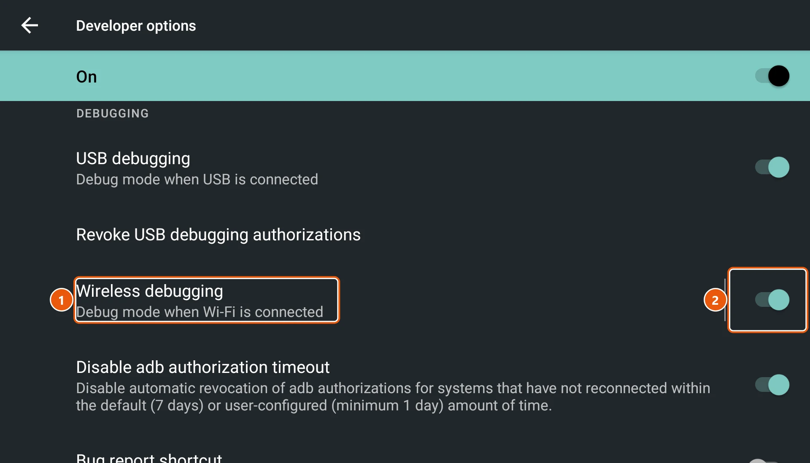
- Tap the words “Wireless debugging” to open its page.
- The switch alone isn't enough for pairing. Open the page.
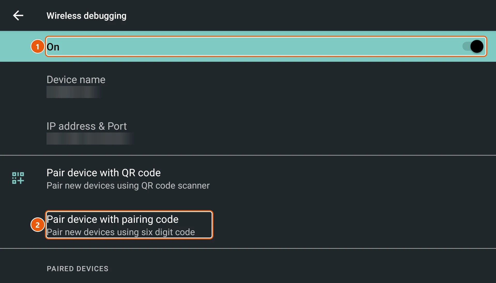
- Switch wireless debugging On. It turns off by itself when Wi-Fi drops.
- Pair device with pairing code shows the six-digit code Shizuku needs the first time.
Shizuku, first time: pair it
Install Shizuku from the Play Store or its GitHub releases page. Pairing happens once per device.
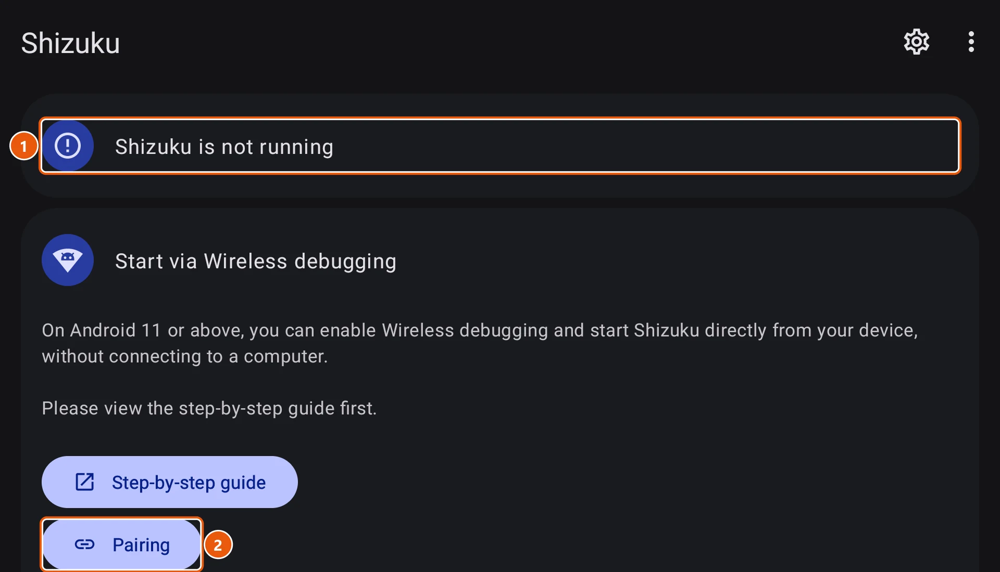
- Status. “Not running” after every restart.
- Pairing. Tap it, then follow the steps below.
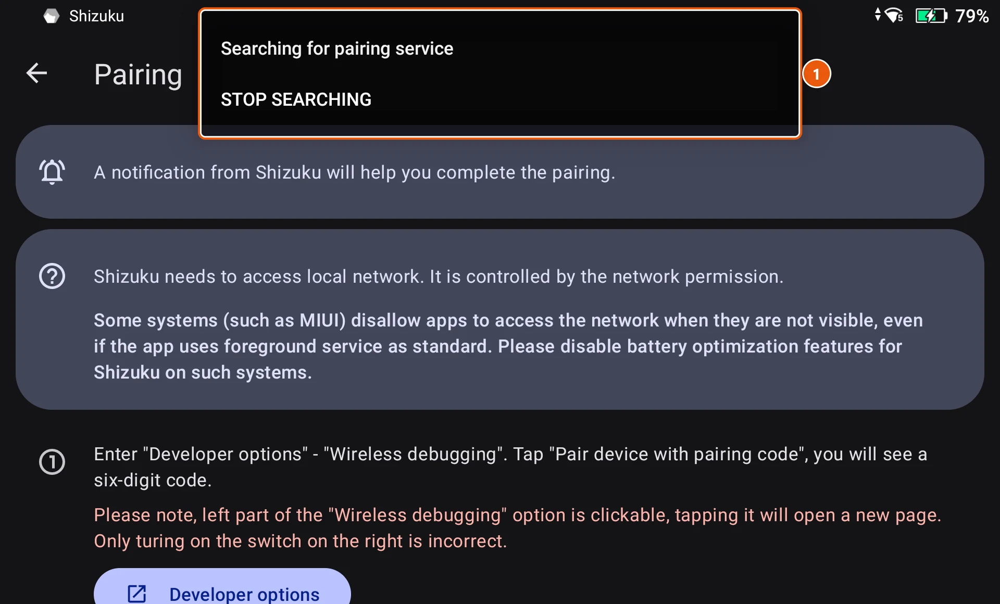
- Shizuku posts a notification: Searching for pairing service ①.
- Go to Wireless debugging → Pair device with pairing code.
- Pull down the notification shade, tap Enter pairing code in Shizuku's notification, and type the six digits.
- Shizuku confirms the pairing. You won't need to repeat this.
Shizuku, every time: start it
- Join Wi-Fi and make sure wireless debugging is on.
- Open Shizuku and tap Start.
- A Starter log scrolls by and closes after three seconds.
- The top card now reads Shizuku is running.
If Shizuku isn't running when you send a mission, the Send to DJI Fly dialog shows a red warning with a Start Shizuku button that opens Shizuku for you. Tap Start there, come back, and send. When folder access isn't set up, the Export screen also has a Shizuku shortcut button. With DJI Fly Refresher installed and folder access granted, the warning becomes a blue line instead.
Shizuku, first send: allow Lite Flight
The first time you send after Shizuku is running, the send dialog asks for permission. Tap Allow in Shizuku, then Allow all the time.
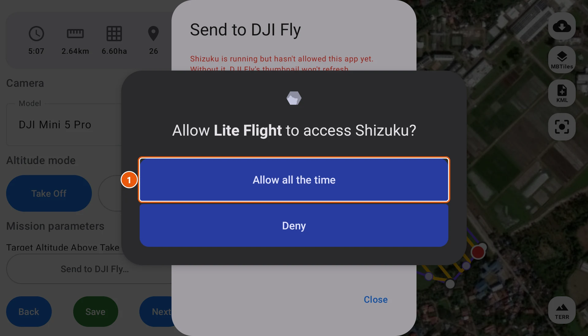
Or: DJI Fly Refresher (DJI RCs only)
DJI Fly Refresher clears DJI Fly's cache by tapping through its App info for you: Force stop, Storage, Clear cache. It works on the DJI RC Pro 2, the original DJI RC Pro and the DJI RC 2, with no Wi-Fi and nothing to start after a reboot. Install DJI-Fly-Refresher-v1.1.apk from the download page, next to Lite Flight.
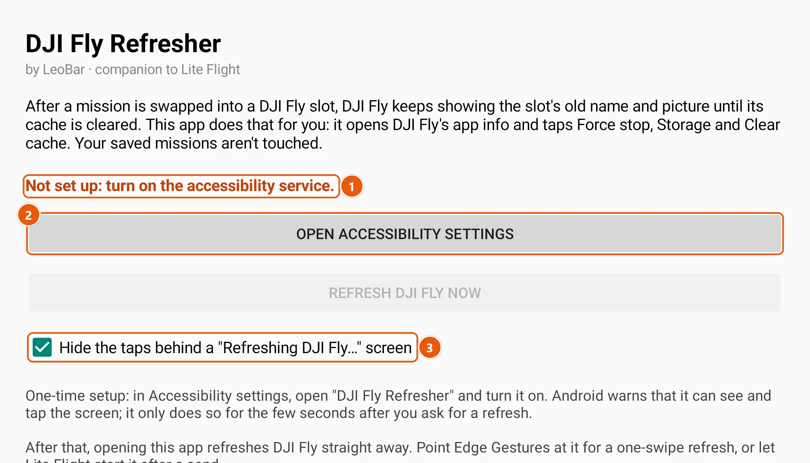
- Status. Orange until the accessibility service is on, then green.
- Open Accessibility settings takes you to the switch.
- Refreshing screen. Covers the taps with a “Refreshing DJI Fly…” screen. Leave it ticked.
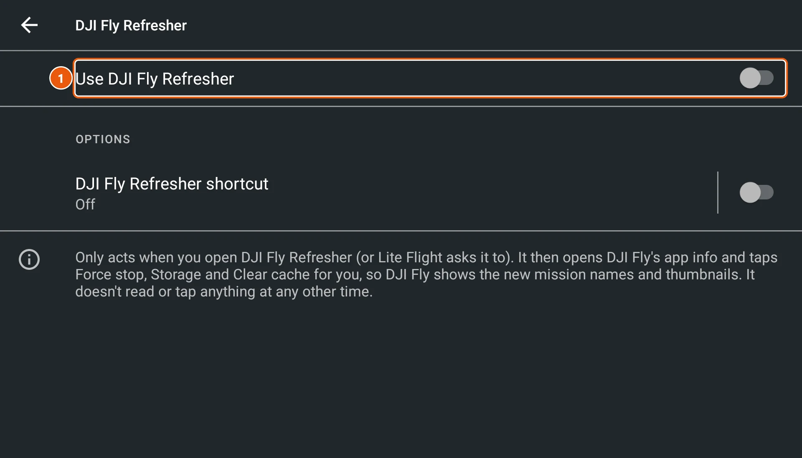
- Under Downloaded apps, tap DJI Fly Refresher.
- Turn on Use DJI Fly Refresher ①.
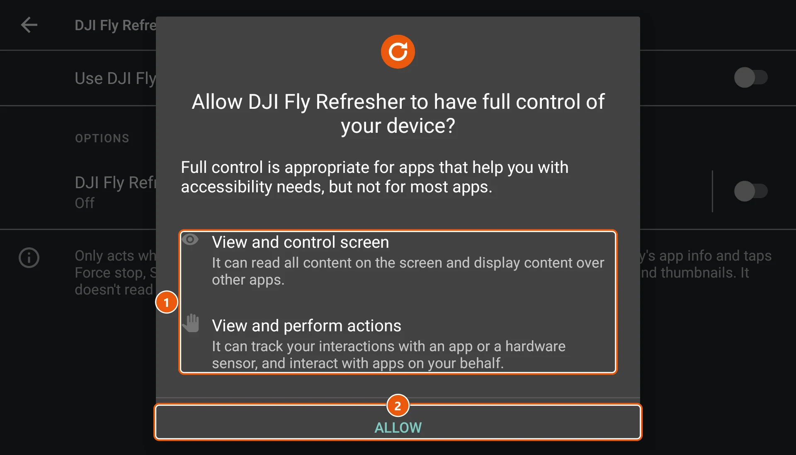
- What Android warns about. An accessibility service can read the screen and tap for you. That's exactly how the Refresher works.
- Allow switches it on. It stays on, even after a restart.
Android shows this warning for every accessibility app, because the permission is powerful. DJI Fly Refresher only watches the Settings app, only taps DJI Fly's Force stop, OK, Storage and Clear cache buttons, and only in the few seconds after you ask for a refresh. It has no internet permission, and no other app except Lite Flight can start it. If that's more than you're comfortable with, use Shizuku or clear the cache by hand instead.
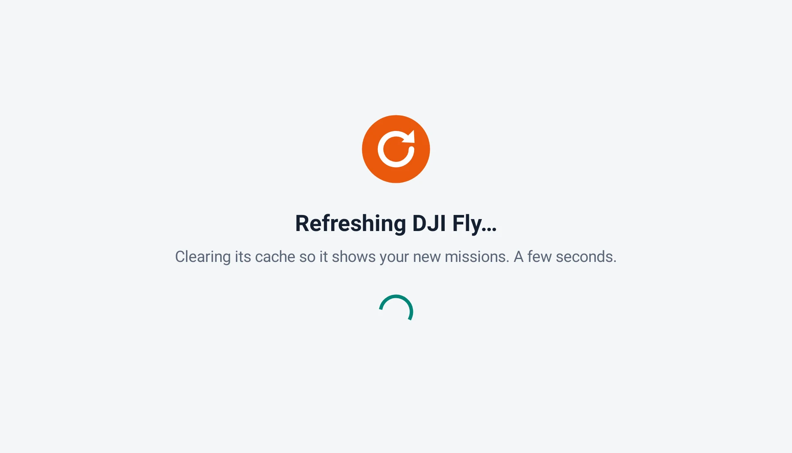
- After a send, Lite Flight offers Refresh & open DJI Fly (see Send to DJI Fly).
- This screen shows for about four seconds while the Refresher works behind it.
- DJI Fly opens with the new mission name.
- Tapping the Refresher's own icon also runs a refresh, handy as a gesture shortcut.
05 · Home screen
The map screen
Lite Flight opens here. The left panel holds the mission type and your saved missions; the map holds the drawing tools.
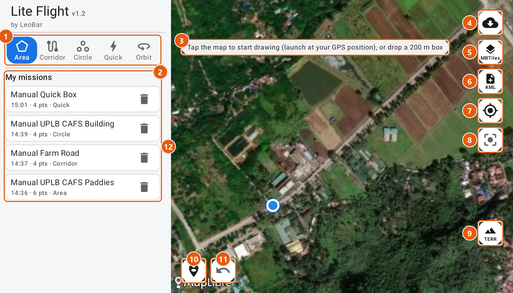
- Mission type: Area, Corridor, Circle or Quick. See Mission types.
- My missions. Tap one to load it. Long-press to select several.
- Hint for the next step: tap the map to start.
- Download imagery for offline use.
- MBTiles loads your own drone orthophoto or map file as an overlay.
- KML imports a boundary drawn elsewhere (Google Earth, QGIS) as a guide shape.
- My location centres the map on your GPS position.
- Recenter zooms to the shape you've drawn.
- TERR shades saved elevation, so you can spot hills.
- 200 m box drops a ready-made square at the launch point.
- Undo removes the last point.
- Panel handle. Drag it to widen the panel.
The green dot is the launch point. It starts at your GPS position. To move it, tap the green dot, then tap where you'll actually take off. The flight time and the first leg are worked out from there.
This matters most for terrain follow. Each waypoint's height is worked out relative to the ground at the launch point, so a launch point in the wrong place raises or lowers the whole mission.
Put the green dot exactly where the drone will take off. If the drone takes off somewhere else, every height in the mission is off by the difference in ground height between the two spots:
- Take off from higher ground than the green dot, and the drone flies higher than the height above ground you set.
- Take off from lower ground than the green dot, and the drone flies lower than you set. It can fly into the ground, trees or buildings.
Check the launch point every time, before you send the mission. Lite Flight can't tell where you'll really take off, so getting it right is your responsibility.
06 · Drawing
Mission types
Pick the type from the tabs before you draw. Each one lays out its flight lines differently.
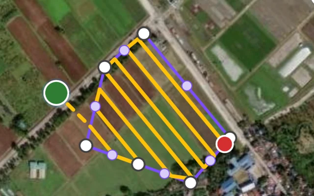
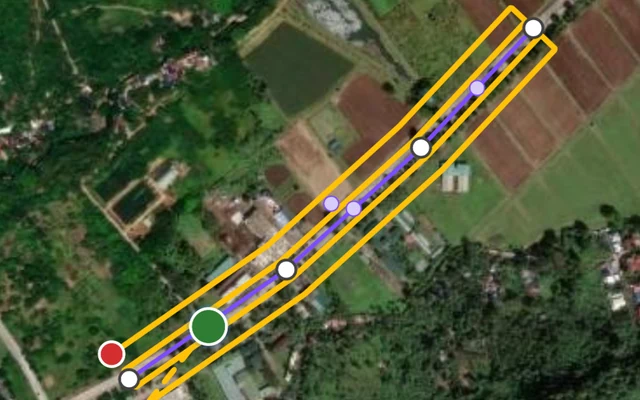
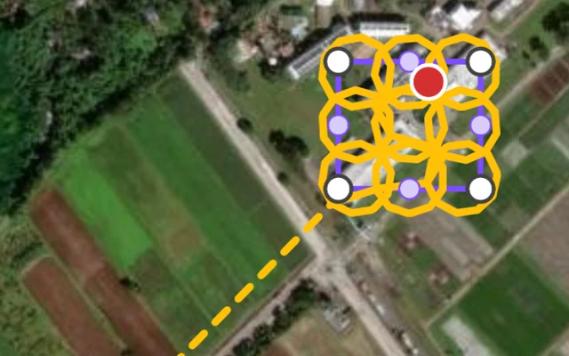
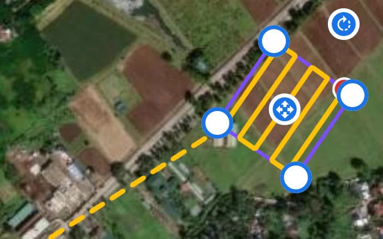
Area
- Choose Area.
- Tap each corner of the field in order, going around it. Three corners are enough to make a mission; the banner shows 5 points — ready.
- Lines can't cross. If a tap would cross an edge, the app refuses it and says why.
- Tap Next to see the flight lines and settings.
Fix the shape. Tap a corner to select it (it turns orange), then tap where it should go. Tap a purple midpoint to add a corner there.
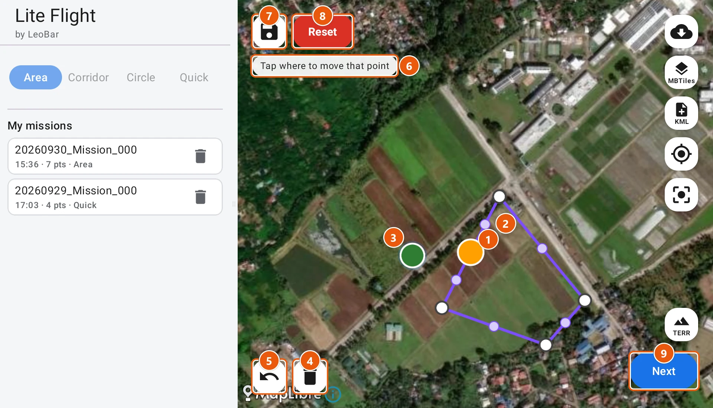
- Selected corner (orange). Tap the map to move it.
- Midpoint (purple). Tap it to add a corner.
- Launch point (green).
- Delete corner removes the selected corner.
- Undo.
- Hint says what the next tap will do.
- Save to My missions.
- Reset clears the drawing.
- Next opens the mission settings.
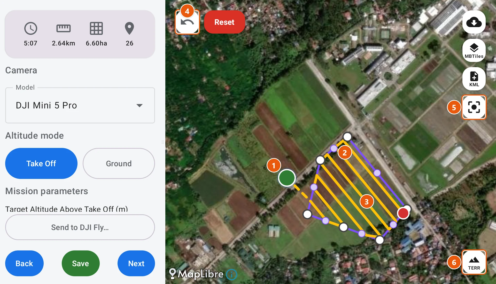
Corridor
- Choose Corridor.
- Tap points along the centre of the road or canal, from one end to the other. Bends are fine.
- Tap Next. The lines run parallel to your path on both sides.
- Set the width with Number of lines (even numbers, 4 or more).
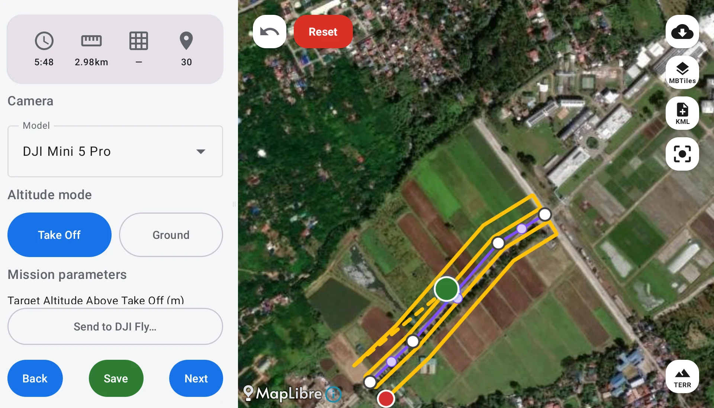
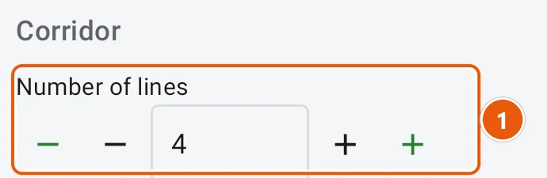
Circle
Circle mode covers an area with overlapping orbits and tilts the camera to look at each orbit's centre. The oblique views give 3D models straighter walls than straight-down photos. Draw the boundary the same way as an Area.
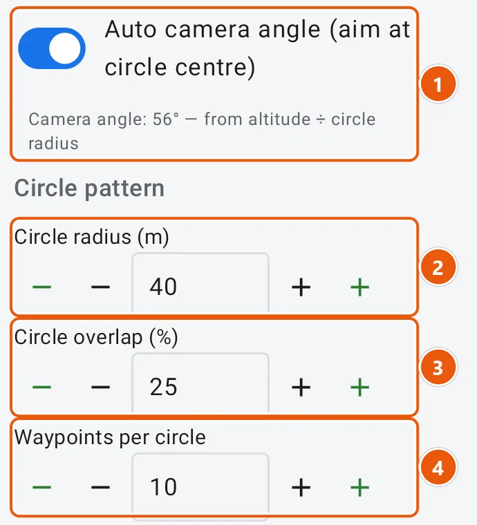
- Auto camera angle aims the camera at each orbit's centre, worked out from altitude and radius. Leave it on.
- Circle radius. 40 m is the default; larger circles mean fewer orbits.
- Circle overlap. 25 % is the lowest value tested in published research. Go higher, not lower.
- Waypoints per circle. More points turn the camera more smoothly but use up the waypoint budget faster.
Circle missions get large quickly. This 1.4 ha block already needs 99 waypoints. The more waypoints a mission has, the more DJI Fly lags while loading and editing it. Lite Flight suggests staying under 150 waypoints, but that's a guideline, not a limit: missions of over 300 waypoints still load and work on the RC Pro 2, just more slowly. Above 150, the Send to DJI Fly… shortcut points you to the Export screen, which warns you and lets you send anyway.
Quick
Quick mode is for short field windows. You drag out a rectangle, turn it to line up with the field, and fly. Only the settings you're likely to change are shown; the camera stays at the mapping tilt of 75°.
- Choose Quick and tap Draw.
- Drag one finger across the field to draw a box. The banner shows its size, e.g. 181 × 214 m · 3.9 ha.
- Drag the rotate handle to line the box up with the field rows.
- Drag the move handle or any corner to adjust it, then tap Next.
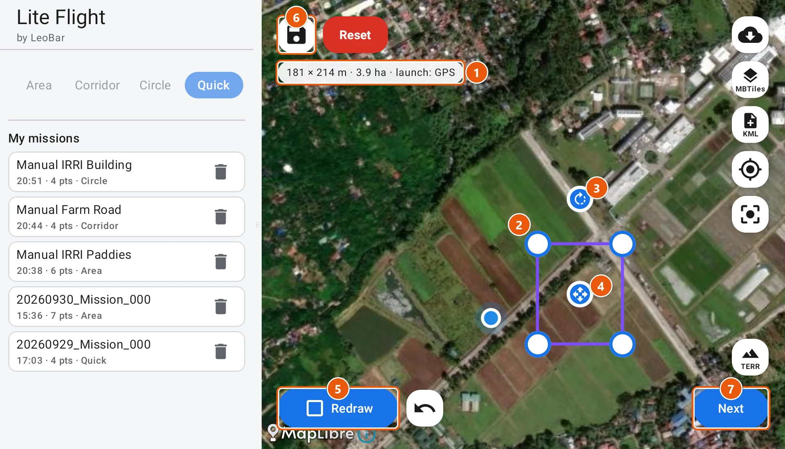
- Size and launch of the box.
- Corner handles resize it.
- Rotate handle.
- Move handle.
- Redraw starts a new box.
- Save to My missions.
- Next.
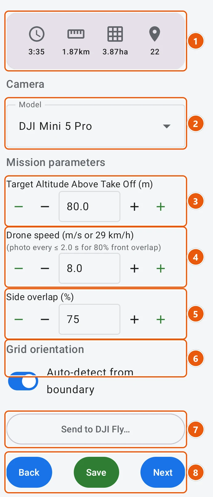
- Flight summary. See settings.
- Drone model.
- Altitude, 80 m by default.
- Drone speed, with the photo interval to set in DJI Fly.
- Side overlap, 75 % by default. Front overlap is fixed at 80 % for a 2 s Timed Shot.
- Grid orientation follows the box automatically.
- Send to DJI Fly…
- Back · Save · Next.
07 · Before you send
Mission settings
After Next the left panel turns into the settings list. Every change redraws the flight lines straight away, so you can watch the effect.
The black − / + buttons change a value by a small step; the green − / + buttons change it by a big step (10 m of altitude, 1 m/s of speed). You can also tap the number and type a value.
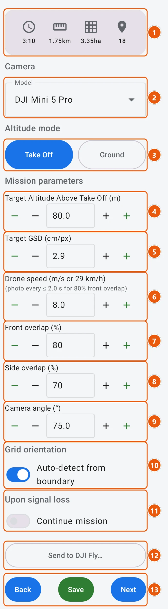
- Flight summary: flight time · distance · area · waypoint count. Time includes flying out from the launch point and back.
- Camera model. Pick your drone. It sets the sensor maths and the top speed.
- Altitude mode. Take Off flies a fixed height above the launch point. Ground follows the terrain (see below).
- Target altitude in metres. Higher = faster flights, coarser detail.
- Target GSD. Type the detail you want and the altitude adjusts to match. 2.9 cm/px at 80 m on a Mini 5 Pro.
- Drone speed. The grey line below it is the Timed Shot interval to set in DJI Fly. Turns red if you'd need shots faster than every 2 s; slow down as it suggests.
- Front overlap. 80 % for most mapping.
- Side overlap. 70–75 %. Higher means more lines.
- Shutter speed you'll use. A slower shutter lowers the top speed so photos aren't blurred.
- Camera angle in degrees below the horizon. 90 is straight down; 75 cuts the “bowl” error in 3D models.
- Grid orientation. Auto picks the line direction from the boundary. Switch it off to set your own angle.
- Upon signal loss. Off: the drone stops the mission and does what DJI Fly is set to do when the signal is lost (usually return home). On: it finishes the mission first.
- Send to DJI Fly… See Send to DJI Fly.
- Back to edit the shape · Save to My missions · Next to the Export screen.
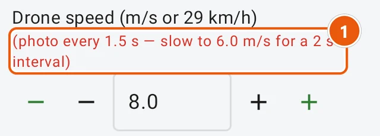
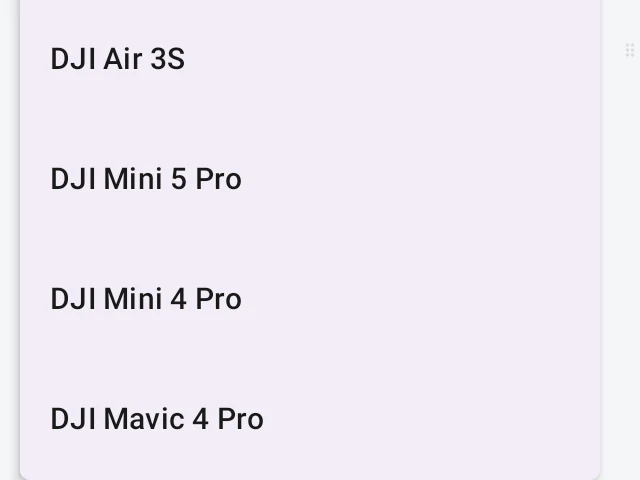
Terrain follow
On sloping ground a fixed height means photos near the hilltop are sharper than those in the valley. Ground mode keeps the drone at the same height above the ground using the elevation data you downloaded.
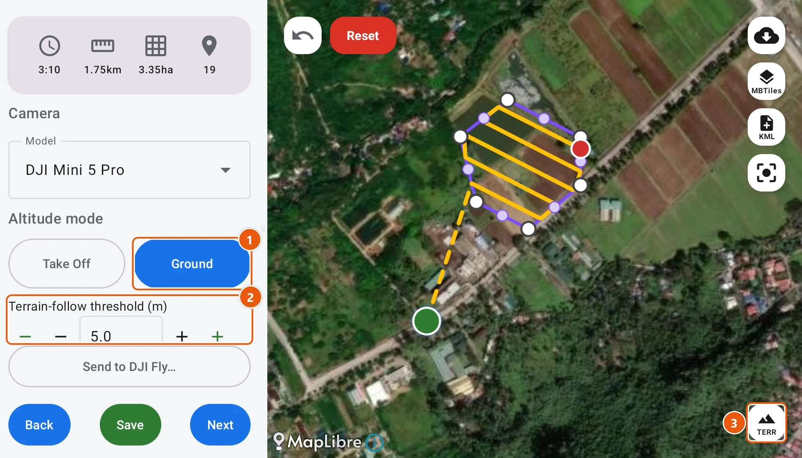
- Ground turns on terrain follow. The altitude field becomes Above Terrain.
- Terrain-follow threshold. A new waypoint is added each time the ground rises or falls by this much. 5 m suits most sites; a smaller value follows the ground closely but adds waypoints.
- TERR shows the elevation shading under your mission.
If there's no saved elevation for the site, the app downloads it when you pick Ground, which needs internet. Tick Include elevation data when you save the imagery at home.
08 · Handing over
Send to DJI Fly
From the settings panel, Send to DJI Fly… puts the current mission into a DJI Fly slot in one tap.
- Tap Send to DJI Fly… under the settings.
- Tap a slot. DJI Waypoint Mission No. N is unused; Swap: Mission already holds one of yours and asks before overwriting.
- With Shizuku running, DJI Fly's cache is cleared and DJI Fly opens by itself.
- With DJI Fly Refresher instead, tap Refresh & open DJI Fly (see below).
- With neither, tap Open DJI Fly anyway. The mission is there, but the old thumbnail may still show.
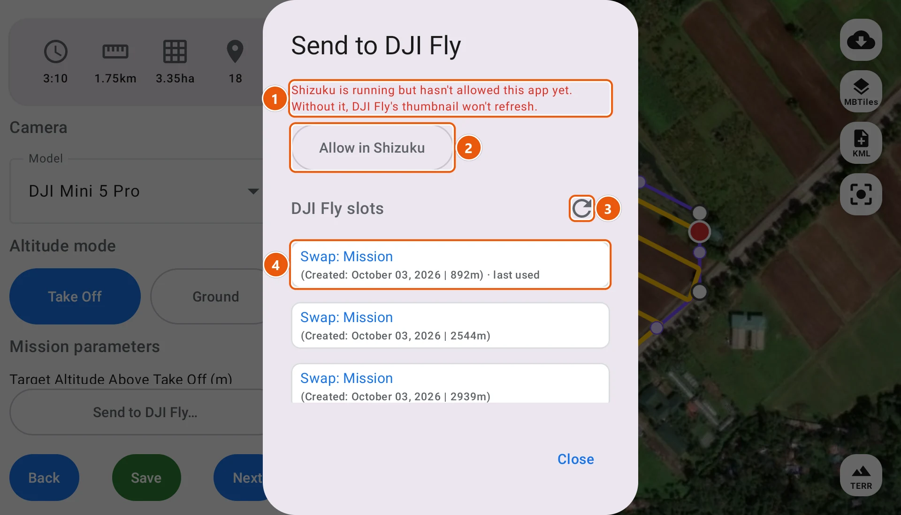
- Status. Red means DJI Fly won't refresh by itself; blue means all set, with Shizuku or with DJI Fly Refresher.
- Allow in Shizuku (or Start Shizuku) fixes it from here.
- Refresh after making new slots in DJI Fly.
- Swap: Mission is a slot you filled before. It's safe to overwrite, but the app asks first.
Sending with DJI Fly Refresher
- Tap a slot and confirm, as above.
- Tap Refresh & open DJI Fly.
- The “Refreshing DJI Fly…” screen covers the Refresher's taps for a few seconds.
- DJI Fly opens, showing the new mission name.
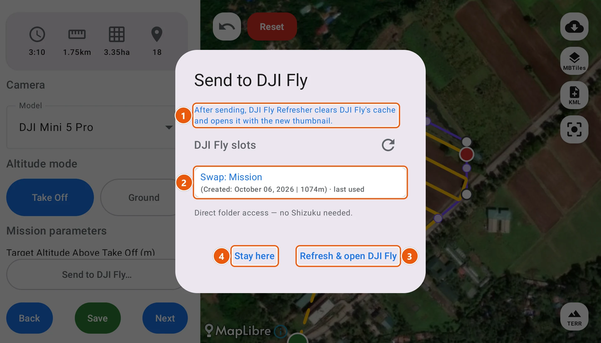
- Blue line: the Refresher clears DJI Fly's cache after the send. No Shizuku needed.
- The slot you just filled.
- Refresh & open DJI Fly runs the Refresher, then opens DJI Fly.
- Stay here keeps you in Lite Flight to send more.
Whenever Lite Flight opens DJI Fly for you, it closes itself to free memory on the controller. The mission you were working on is kept, unsaved changes included, and comes back the next time you open Lite Flight.
Find it in DJI Fly
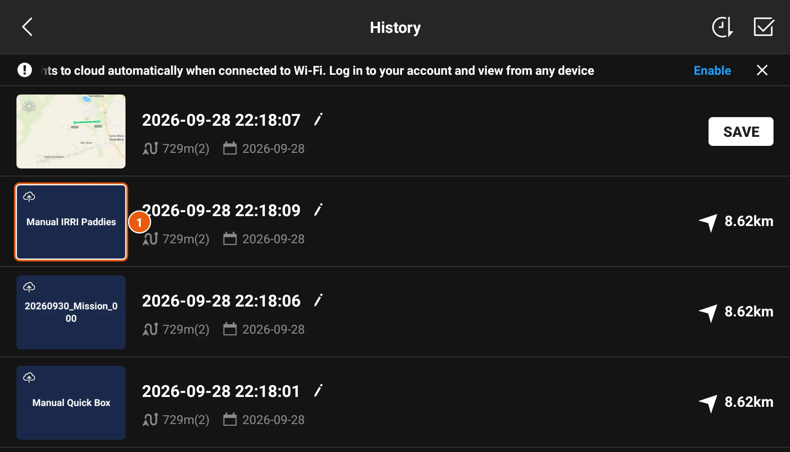
- In DJI Fly's waypoint list, the slot now shows your mission's name ①. The date stays the slot's original date.
- Open it and check the route on the map.
- Switch the camera to Timed Shot at the interval Lite Flight showed, start shooting, and press GO.
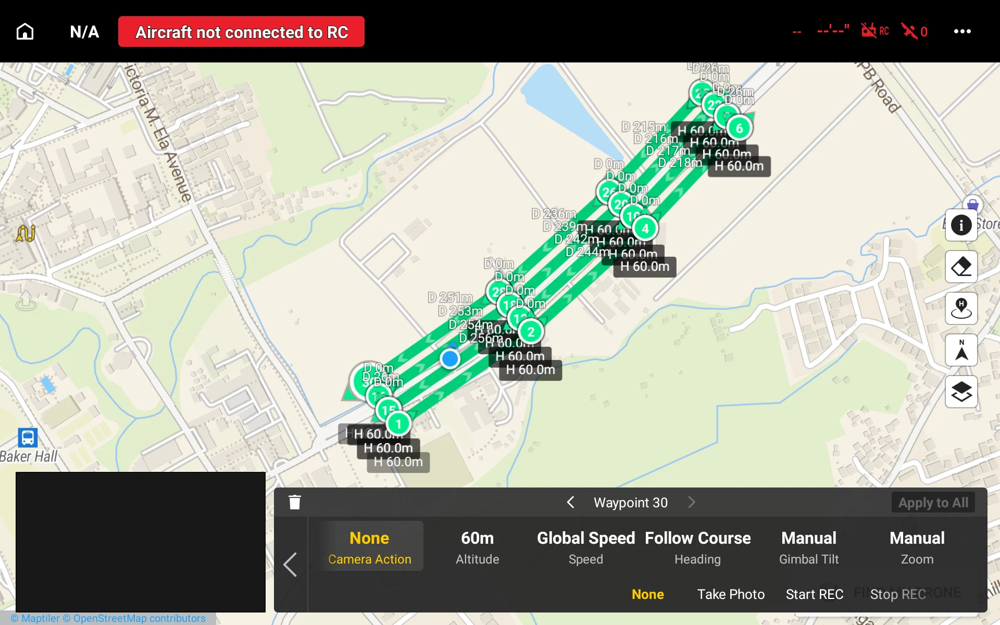
Send several at once
From My missions, long-press a mission, tick the others (or tick a whole group), and tap the send arrow.
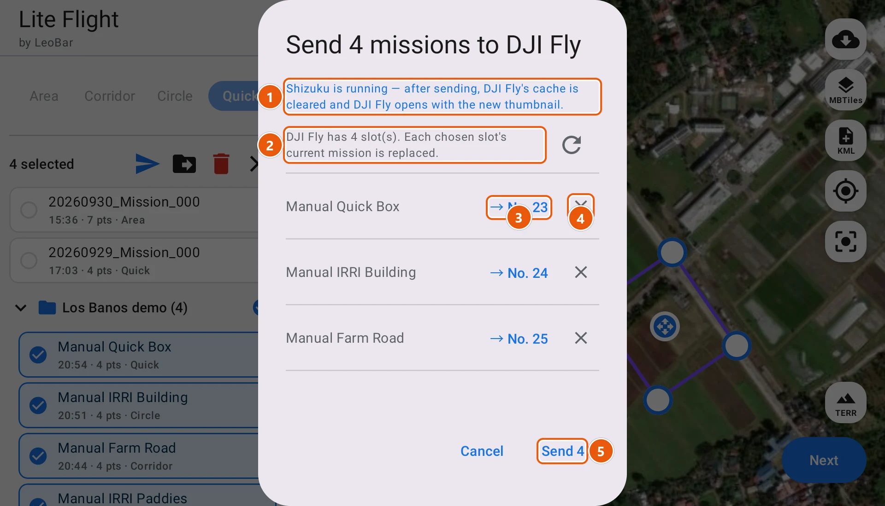
- Status: Shizuku, or DJI Fly Refresher.
- Slots available. You need one per mission.
- → No. N is the slot each mission goes to. Tap it to choose another.
- × leaves that mission out of this batch.
- Send fills every slot. Then Clear cache & open DJI Fly (Shizuku) or Refresh & open DJI Fly (Refresher) hands over to DJI Fly.
09 · Keeping missions
My missions
Saved missions keep their shape and every setting. Groups keep a site or a client's jobs together.
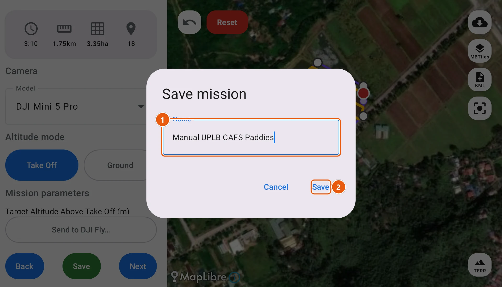
- Name. It's also the name DJI Fly shows on the slot, so make it something you'll recognise in the field.
- Save adds it to My missions.
- Long-press a mission to start selecting, then tap the others.
- Tap the folder icon to move them.
- Type a New group name and tap Create, or pick an existing group.
- Tap a group's arrow to fold it away.
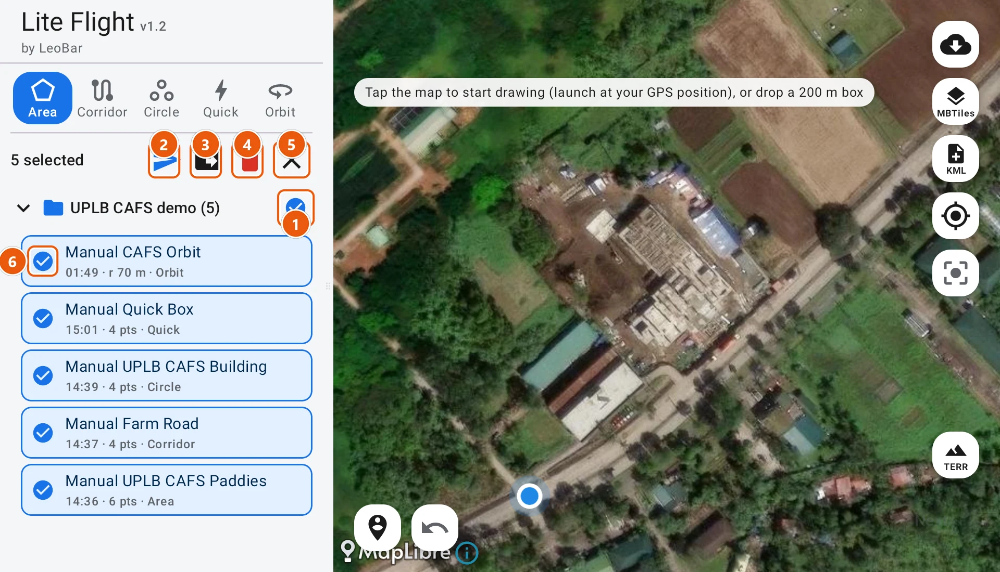
- Group tick selects every mission in the group.
- Send them all to DJI Fly.
- Move to another group.
- Delete (asks first).
- Cancel selection.
- Selected missions show a tick.
10 · Files
Export screen
Next on the settings panel leads here. Use it to keep a copy of the file, share it, or send a mission you received as a .kmz.
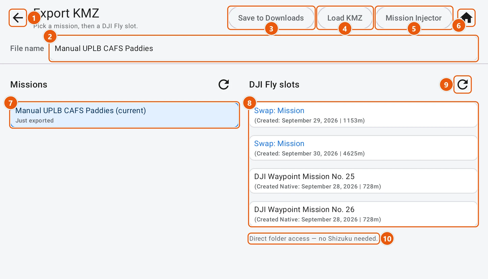
- Back to the settings.
- File name of the exported
.kmz. - Save to Downloads puts a copy in
Download/LiteFlight. - Load KMZ adds DJI mission files from elsewhere to the list.
- Mission Injector hands the file to the phone app Lite Flight 1.0 used for the DJI RC 2. With 1.1 you don't need it; see Missions on the DJI RC 2.
- Home returns to the map.
- Missions ready to send. Tap one to select it.
- DJI Fly slots. Tap one to send the selected mission.
- Refresh the slot list.
- Access method in use: folder access or Shizuku.
After a send from this screen, a button appears under the slots: Clear cache & open DJI Fly with Shizuku running, or Refresh & open DJI Fly with DJI Fly Refresher.
On a DJI RC, if Shizuku isn't running, this screen offers Use folder access instead of Shizuku. Tap it, then Allow access to dji.go.v5 and Allow. That's a one-time grant, and missions can then be sent without Shizuku. Phones don't allow it; they need Shizuku.
Without Shizuku or the Refresher, DJI Fly keeps showing the slot's old thumbnail until its cache clears. To refresh it yourself, go to Android Settings → Apps → DJI Fly → Storage and tap Clear cache. Your saved missions aren't affected.
11 · When something's off
Troubleshooting
The map is blank or blurry at the field
That area wasn't downloaded, or a different map source is selected. Open Imagery Download and check the area is listed. Tap it to switch back to the source it was saved from.
The send dialog says “No DJI Fly waypoint found”
DJI Fly has no saved waypoint missions to fill. Make a couple of placeholder missions in DJI Fly (see Prepare DJI Fly slots), then tap refresh.
DJI Fly still shows the old mission name
DJI Fly is showing a cached thumbnail; the route itself has already been replaced. Open DJI Fly Refresher, or start Shizuku and send again, or clear DJI Fly's cache in Android Settings → Apps → DJI Fly → Storage.
Sending fails with “Failed to determine if … is child of …”
That's a bug in Lite Flight 1.0 on controllers with older Android storage, such as the original DJI RC Pro and the DJI RC 2. Install Lite Flight 1.1 over it from the download page; your missions and license are kept.
Lite Flight closed when DJI Fly opened
That's on purpose, to free memory for DJI Fly. Open Lite Flight again and the mission you were working on is back.
DJI Fly Refresher does nothing
Check that it's still on in Android Settings → Accessibility, then open the Refresher once: its status line says what's missing.
Shizuku won't start
Wireless debugging needs Wi-Fi. Join a network (a phone hotspot with no data is fine), check wireless debugging is on, then tap Start again. After a reboot you always need to start Shizuku again.
The speed hint turned red
At this speed DJI Fly would need to shoot faster than every 2 seconds. Lower the speed to the value in the message, fly higher, or reduce front overlap.
“Large waypoint count”, or DJI Fly lags with the mission
Large missions still work, but DJI Fly gets slower as the waypoint count grows; 150 is a suggestion, not a limit. To make a mission lighter, split a big site into two missions, raise the altitude, lower side overlap, or (in Circle mode) use fewer waypoints per circle.
My tap moved the launch point instead of adding a corner
Taps close to the green launch dot select it. Tap a little further away, or zoom in so there's more room.
Terrain follow says there's no elevation data
The site's elevation wasn't saved. Connect to the internet and pick Ground again, or re-download the area with Include elevation data ticked.
12 · DJI RC 2
Missions on the DJI RC 2
With Lite Flight 1.1 the RC 2 works on its own, with no phone or cable. Lite Flight sends missions straight into DJI Fly's slots, and DJI Fly Refresher makes DJI Fly show them. Out of the box, though, the RC 2 can't install apps. FreeFCC's helper apps come first; everything else builds on them.
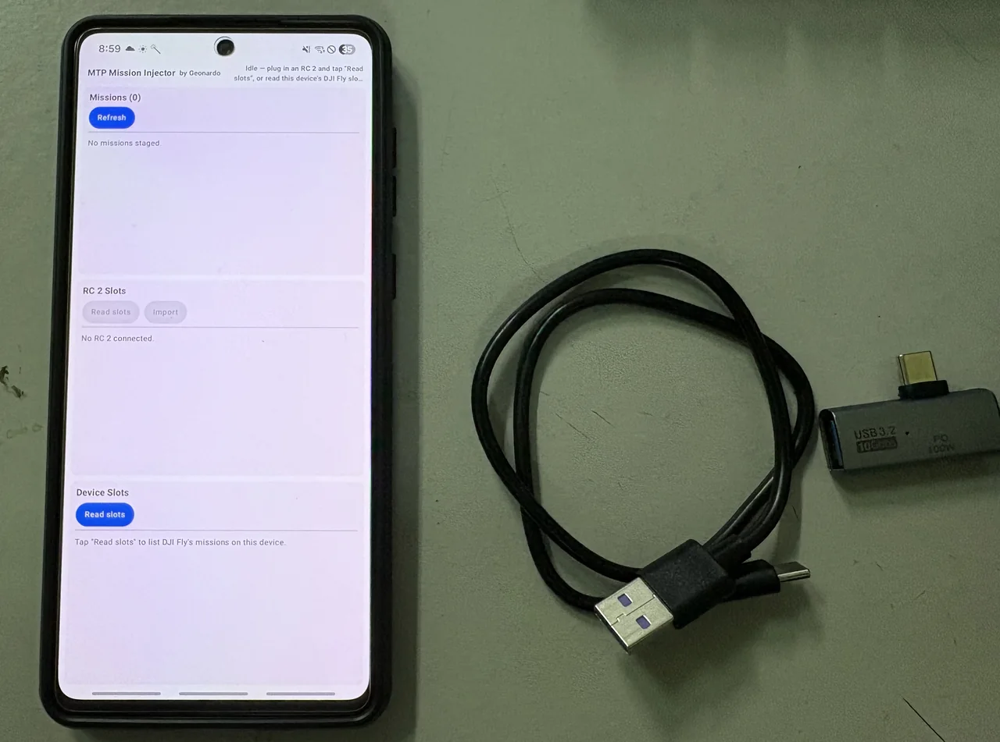
What you need
- The DJI RC 2.
- A microSD card. It gets formatted, so copy off anything on it first.
- A computer or phone that can copy files onto the card.
- FreeFCC's helper apps:
freefcc-helpers.zip. LiteFlight_v1.1.apkandDJI-Fly-Refresher-v1.1.apkfrom the download page.
FreeFCC is a free, open-source project (AGPL-3.0) that isn't made by or affiliated with DJI. Its authors warn that using it may void your warranty and DJI Care Refresh. Its main app switches the controller's radio to FCC mode, which may be illegal where you fly. Lite Flight doesn't need that app. The steps below install only the four helper apps that let the RC 2 install and open other apps. Thanks to the FreeFCC authors for making them; the steps follow their guide.
| Helper app | What it adds to the RC 2 |
|---|---|
01_PackageInstaller | Lets the RC 2 install apps. |
02_FileManager | A Files app to find APKs on the card. |
03_ATVLauncher | A home screen that lists every app, including Lite Flight. |
04_Edge Gestures | Swipes on the screen edge that open the launcher, or any app. |
First time · 1 · Format the card in the RC 2
The RC 2 only installs apps from the SD card, and it only lets you browse a card it formatted itself. Do this even if the card is new.
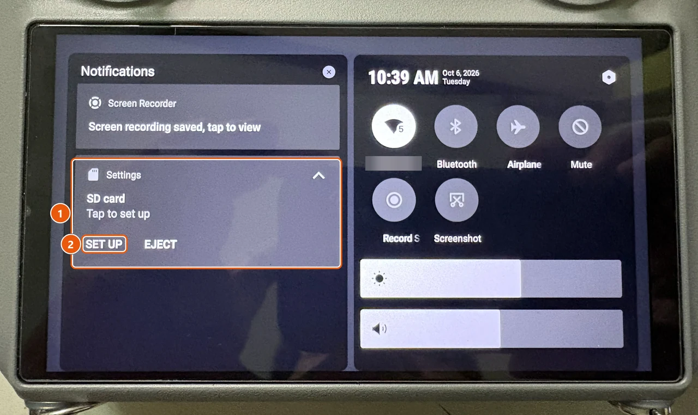
- SD card notification. Put the card in, then swipe down from the top of the screen.
- SET UP starts the format.
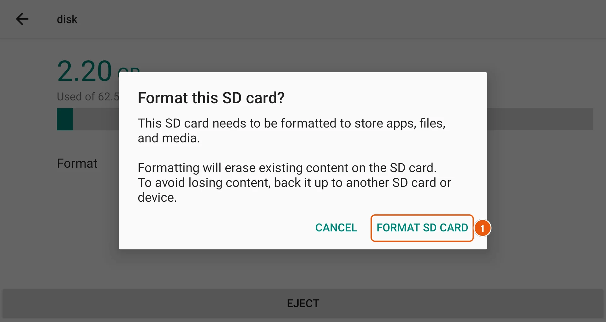
- Tap Format if the card's page shows it first.
- Tap FORMAT SD CARD ①. This erases the card.
- When the RC 2 says Your SD card is ready to use, tap Done.
First time · 2 · Put the apps on the card
- Take the card out and put it in your computer (or a card reader).
- Extract
freefcc-helpers.zip. - Copy
LiteFlight_v1.1.apkandDJI-Fly-Refresher-v1.1.apkinto the extracted folder. - Copy that whole folder onto the card, then put the card back into the RC 2.
First time · 3 · Install the package installer and file manager
Swipe down from the top of the screen, tap the SD card notification's EXPLORE, and open your folder.
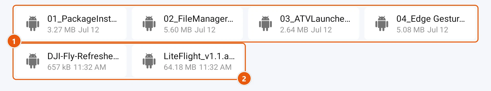
- FreeFCC's helper apps. Install them in number order.
- DJI Fly Refresher and Lite Flight. These come last, in step 6.
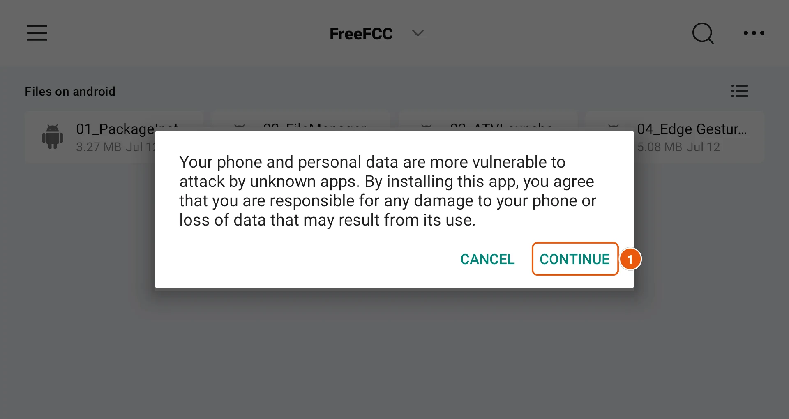
01_PackageInstaller. Android warns about unknown apps: tap CONTINUE.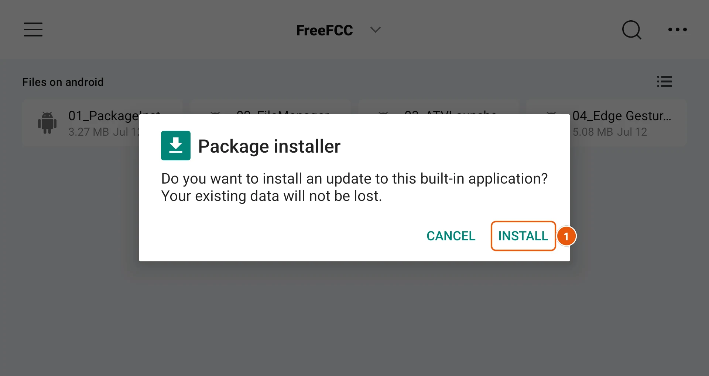
Do the same for 02_FileManager.
First time · 4 · Restart the RC 2
Hold the power button to shut down, then power back on. The restart switches on the new package installer.
First time · 5 · Add the launcher and its swipe
- Back in your folder on the card, install
03_ATVLauncher. Don't open it. - Install
04_Edge Gestures, and this time tap OPEN. - Follow its prompts and switch on its accessibility service. Android shows the same “full control” warning as for DJI Fly Refresher.
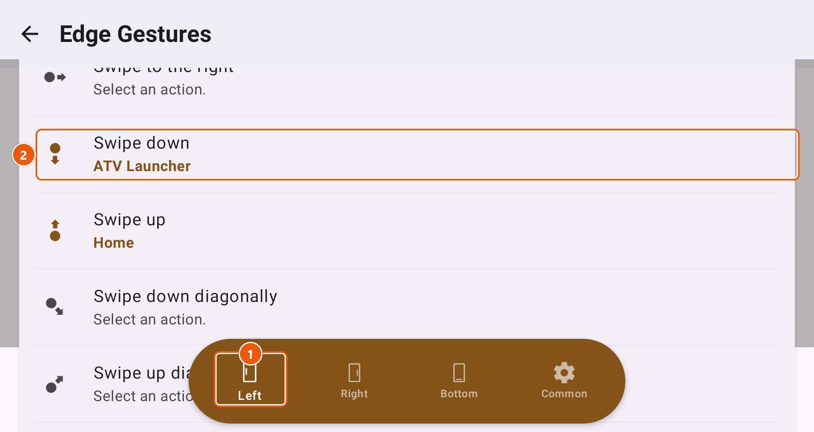
- Left sets the gestures for the screen's left edge.
- Swipe down → ATV Launcher. Tap the row, pick Application, then ATV Launcher.
A downward swipe along the left edge now opens the launcher. Any free gesture works; FreeFCC's own guide uses a right-to-left swipe instead.
First time · 6 · Install Lite Flight and DJI Fly Refresher
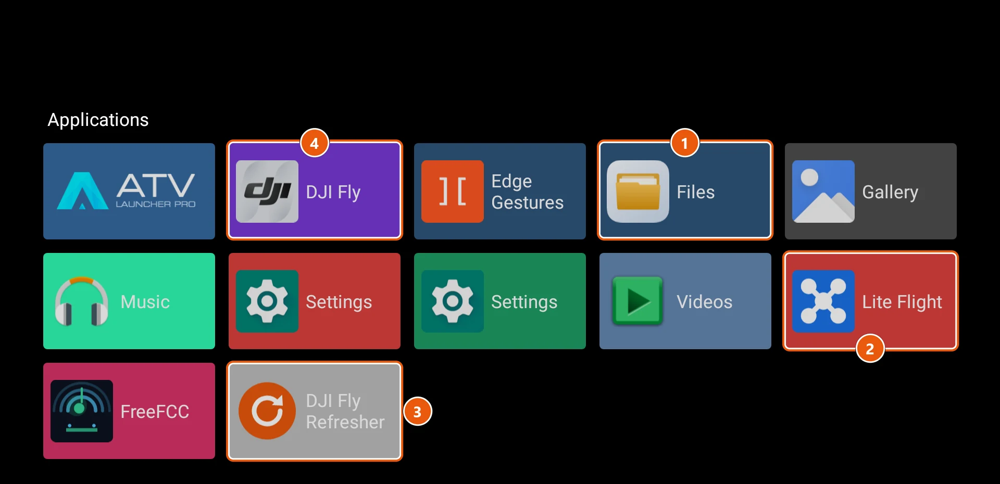
- Swipe to open ATV Launcher, then open Files ①.
- Go to your folder on the card.
- Tap
LiteFlight_v1.1.apkand install it. - Tap
DJI-Fly-Refresher-v1.1.apkand install it. - Lite Flight ② and DJI Fly Refresher ③ now sit in the launcher next to DJI Fly ④.
First time · 7 · Switch on DJI Fly Refresher
Open DJI Fly Refresher from the launcher and turn on its accessibility service, exactly as in chapter 04. On the RC 2 the Refresher is essential: Shizuku can't run there because the RC 2 has no developer options.
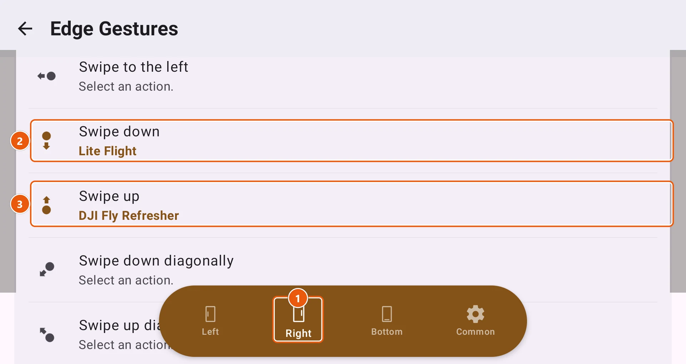
- Optional shortcuts. On the Right tab…
- Swipe down → Lite Flight opens Lite Flight from anywhere.
- Swipe up → DJI Fly Refresher refreshes DJI Fly with one swipe.
First send: give Lite Flight folder access
Make a few throwaway missions in DJI Fly first (see Prepare DJI Fly slots). Then plan a mission in Lite Flight as usual and tap Send to DJI Fly….
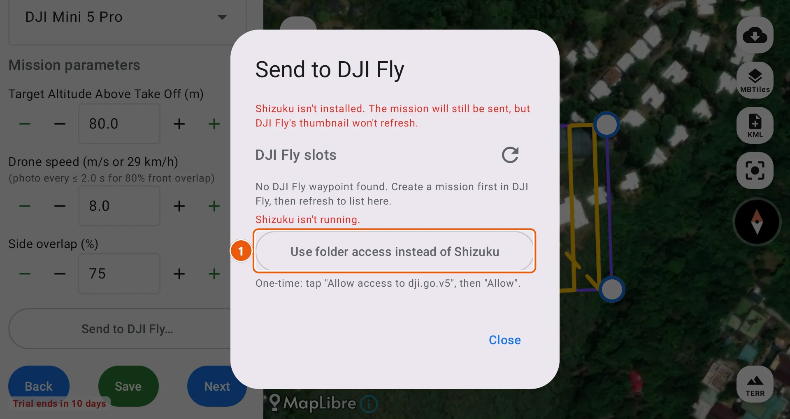
- Use folder access instead of Shizuku. Tap it. The red Shizuku lines don't matter on the RC 2.
- Status. Red until DJI Fly Refresher is installed; then it turns blue and says the Refresher will update DJI Fly.
- DJI Fly's slots are now listed.
- Direct folder access. The grant worked.
A stock RC 2 won't let any app into DJI Fly's folder. With FreeFCC's helper apps installed, Android's folder picker can open it, which is all Lite Flight needs.
Every send
- Tap a slot and confirm, as in Send to DJI Fly.
- Tap Refresh & open DJI Fly (see Sending with DJI Fly Refresher).
- The “Refreshing DJI Fly…” screen shows while the Refresher works. It takes a little longer on the RC 2 than on the RC Pro 2.
- DJI Fly opens. Lite Flight closes itself and keeps your mission for next time.
1.0 needed an Android phone running MTP Mission Injector to reach DJI Fly on the RC 2. With 1.1 the phone isn't needed. The injector is still on the v1.0 download page.
The RC 2 won't show the files on the card
Format the card in the RC 2 itself (step 1), then copy the folder onto it again.
Tapping an APK does nothing, or installing is blocked
Install 01_PackageInstaller first and restart the RC 2 before installing anything else.
Swiping from the edge doesn't open the launcher
Open Edge Gestures from the card's folder again and check that its accessibility service is on and that a swipe points at ATV Launcher.
Lite Flight doesn't offer folder access, or the picker won't allow dji.go.v5
Check that the helper apps are installed and that you restarted after 01_PackageInstaller.
DJI Fly on the RC 2 still shows the old picture
The route has already been replaced. Open DJI Fly Refresher (or use its swipe) to refresh it.